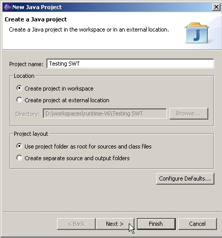
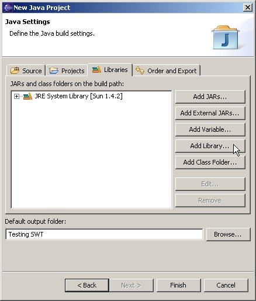
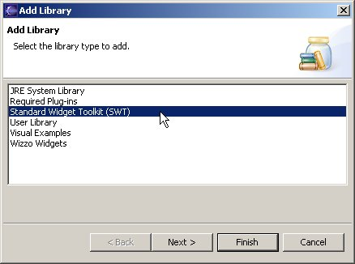
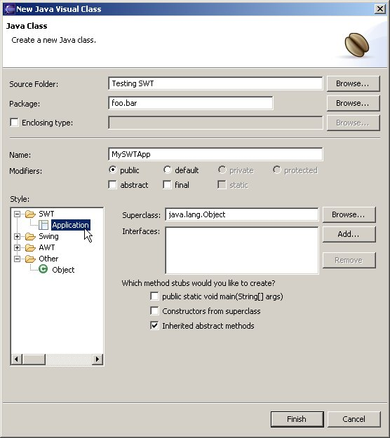
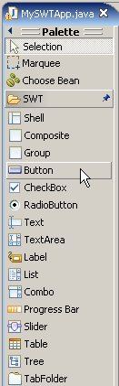

Previewing SWT Support in the Visual Editor 1.0 M2
This document will help you get setup to preview the VE's SWT
support. The SWT functionality is still under heavy development
but it is worth
previewing for those interested in a glimpse of what is to come.
Requirements:
- Eclipse 3.0
- Visual Editor 1.0 M2
- JRE 1.4.2
- Win32 or Linux/GTK (support for other platforms to come, see bug 58022)
1. Creating a new Java
Project
Launch the wizard to create a new Java Project in your workspace.
Give the project a name and hit Next
>
(not finish).

On the following page, select the Libraries
tab and press the Add Library...
button.

Select the Standard Widget Toolkit
(SWT) library. Hit Next,
then Finish, then Finish on the New Java Project
wizard.
Note: You can add the SWT library to an existing Java project by
opening the project's Properties
(from the context menu), selecting Java
Build Path, then the Libraries
tab, then Add Library... as
shown above.

2. Creating an SWT Visual
Class
Select the newly created project, and create a new Visual Class in it
(select the project, bring up the context menu, go to New->Visual
Class)
Name the class, expand the SWT
Style and select Application.
Check the create main stub option to generate the SWT event loop.
Hit Finish.

When the Visual Editor loads, you will see a canvas with a shell
dropped on it,
and the SWT group on the Java Beans palette.

The default layout of SWT composites is the null layout, so switch the
Shell's layout to RowLayout from the property sheet.
Try out the SWT support by adding more components to the shell,
modifying properties, changing layouts, adding events, etc.
Currently controls other than Shell must be dropped on a composite to
be shown visually (so you can not drop to the free form). The
code pattern generated will most likely be changed in future milestones.
Hopefully this will give you a sense of what is to come from the Visual
Editor's support for SWT in version 1.0. Please leave feedback on
the eclipse.tools.ve newsgroup, and post bug reports in bugzilla
(and check
for duplicates first)